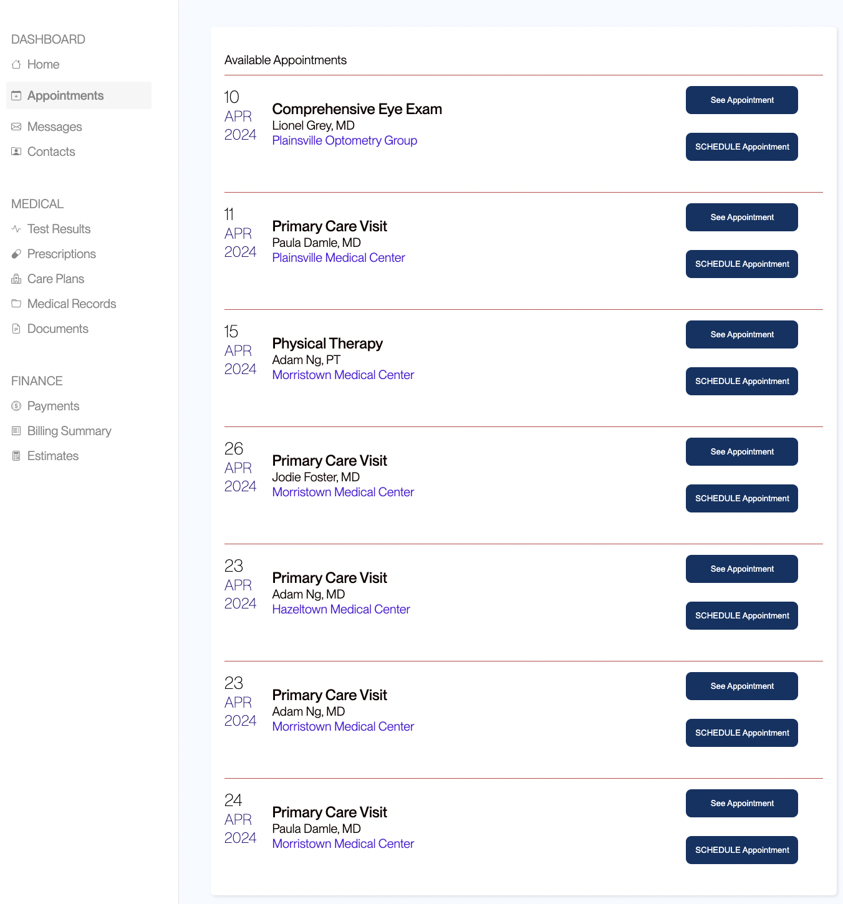
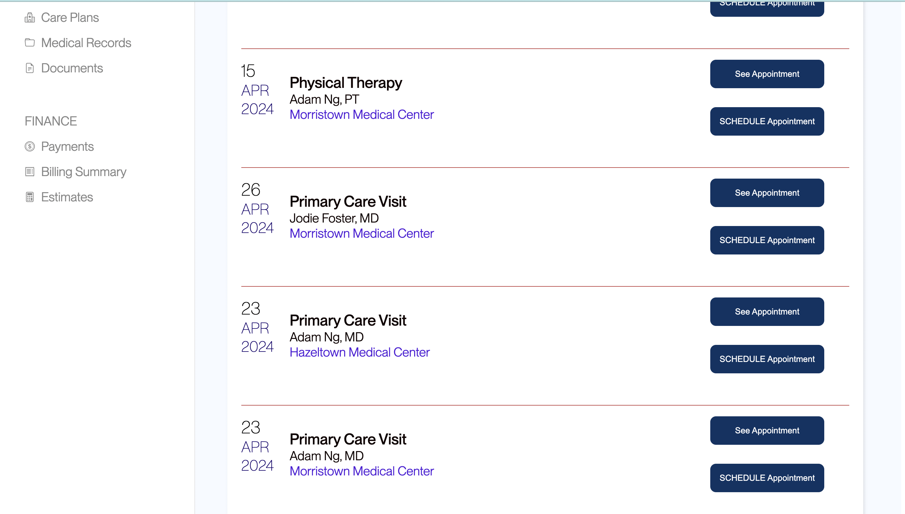
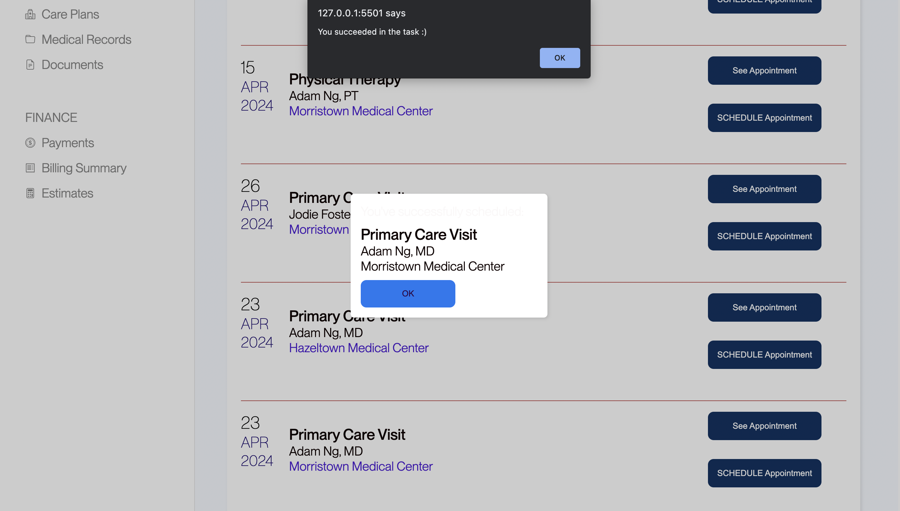

Changes to Interface
  I modified the original design by changing the text & button colors, button spacing, and by adding lines between each appointment date.
Does a certain version of an appointment scheduling web page with modified contrast, spacing, and colors allow different groups of users to complete tasks differently or more quickly? With the use of A/B testing, I will aim to discover whether one version of a webpage produces different user results than another using t-tests. Can a different design of a webpage determine how quickly users are able to navigate through a similar task?
I modified the original design by changing the text & button colors, button spacing, and by adding lines between each appointment date.
My metric of choice is time to first click. I feel that this metric will help me reveal any hints toward whether users felt more confident using one site over another based on the time it took them to make their first click.
*p-value not modified yet
One-tailed t-test:The one-tailed t-test shows whether x (experimental) number is bigger/smaller than y (baseline) number. Since my alternative hypothesis states that the the misclick rate on the webpage for version A is higher than the misclick rate on the webpage for version b, I need a test that will be able to reveal whether my x, version b, is bigger or smaller than my y, version a.
0.19899059153 > 0.05
The p-value (0.19899059153) is not less than the significance level (0.05), therefore, the difference between versions A and B with respect to the misclick rate metric is statistically insignificant.
Calculated by: p_value_{A > B} = 1 - p_value_{A < B}
P-value : 0.19899059153
I fail to reject the null hypothesis.
*p-value not modified yet
One-tailed t-test:The one-tailed t-test shows whether x (experimental) number is bigger/smaller than y (baseline) number. Since my alternative hypothesis states that the time spent on the webpage for version A is higher than the time spent on the webpage for version b, I need a test that will be able to reveal whether my x, version b, is bigger or smaller than my y, version a.
0.00184922196 < 0.05
The p-value (0.00184922196) is less than the significance level (0.05), therefore, the difference between versions A and B with respect to the time on page metric is statistically significant.
Calculated by: p_value_{A > B} = 1 - p_value_{A < B}
P-value: 0.00184922196
I reject the null hypothesis. I find statistically significant evidence that the alternative hypothesis is true.
*p-value not modified yet
One-tailed t-test:The one-tailed t-test shows whether x (experimental) number is bigger/smaller than y (baseline) number. Since my alternative hypothesis states that the time to first click on the webpage for version A is higher than the time to first click on the webpage for version B, I need a test that will be able to reveal whether my x, version b, is bigger or smaller than my y, version a.
0.00103670626 < 0.05
The p-value (0.00103670626) is less than the significance level (0.05), therefore, the difference between versions A and B with respect to the time to first click metric is statistically significant.
Calculated by: p_value_{A > B} = 1 - p_value_{A < B}
P-value: 0.00103670626
I reject the null hypothesis. I find statistically significant evidence that the alternative hypothesis is true.
*P-value description relevant for all of my tests*
Since the calculator (for one-tailed tests) strictly calculates the p-value relating to sample As' values being less than sample Bs' values, I had to correct the outputted p-value since all my hypotheses state that sample As' values will be greater than sample Bs' values. The p-value appropriate for this chosen hypothesis is the complement of the p-value the calculator gives. *taken from Ed Post #153
Test 2:
Avg(A) = 22324.78261 ≅ 22 seconds
Avg(B) = 11210.6 ≅ 11 seconds
Test 3:
Avg(A) = 12217.42857 ≅ 12 seconds
Avg(B) = 6762.210526 ≅ 6 seconds
Based on tests 2 and 3, it is likely that version B is better than version A!
I see that on average people spend 11 more seconds on the version A webpage, and 6 more seconds before clicking on something on it. Analysis shows that it’s likely a true difference. I think that this difference is because of version A's low contrast issues of the text on the buttons, the spacing of the buttons, and the lack of font sizing and color on appointment details. It seems that users more efficiently select what they need to on version B than on version a.